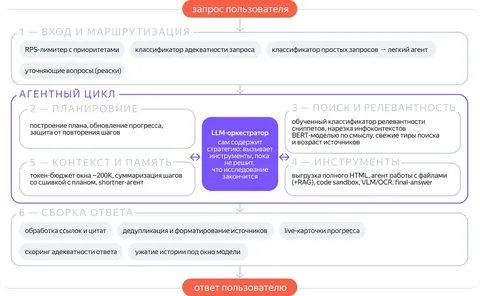

Агент «Исследовать» — это режим Deep Research’а в чате с Алисой AI. Он умеет строить оптимальный план для решения сложной пользовательской задачи. Для этого делает сотни поисков по запросу, пишет Python‑код, ходит на сайты, анализирует скачанные файлы и многое другое.
Работа над агентом началась примерно год назад. Как раз тогда — после релиза DeepSeek‑R1 — случился бум ризонинг‑моделей. Команда агента «Исследовать» и её лид Прохор Гладких, стартовали с того, что научили режим «Рассуждать» работать со свежими данными из сети. Сделали простой RAG-пайплайн с мультизапросным поиском, где запросы генерировала сама LLM. Пользователи оценили качество ответов, и стало понятно, что нужен полноценный Deep Research.
Как обычно, действовать нужно было быстро и в условиях всяческих ограничений. Поэтому решили сделать ставку на обвязку (харнесс) вокруг LLM. Ведь, меняя одну лишь обвязку на той же модели, мы получаем скачки метрик на десятки пунктов. Например, на SWE-bench с 3,8% до 12,5%, а на BrowseComp с 1,9% до 51,5%.
Кроме того, каждый токен в контексте и каждый лишний вызов модели — это GPU-время. Чтобы оптимизироваться тут, сделали три вещи.
1) Отдали обработку поисковых сниппетов обученному классификатору вместо LLM.
2) В инструменты стали ходить только когда это реально нужно для исследования.
3) Генерацию плана перевели на модель полегче без потери качества.
В итоге стоимость запроса сократилась в 6,6 раза, латенси для 90% запросов сократилась с 30 минут до 2,5. То есть пользователи стали получать ответы с тем же качеством ощутимо быстрее.
Пожалуй самый яркий фейл за время работы — то, что пришлось целиком выкинуть первый прототип, собранный на CodeAgent. Эта модель вызывает инструменты, генерируя Python‑код. И метрики там сразу вышли приличные: FRAMES — 75, SimpleQA — 81, GAIA — 26, пониже, потому что агент не умел работать с файлами.
Радовались до тех пор, пока не попробовали протащить решение в прод. Сгенерированный код нужно исполнять в песочнице с доступом в интернет, а значит — за пределами внутреннего контура. При этом инструменты агента живут внутри контура, поэтому пришлось бы пробрасывать tool-call из внешней сети внутрь, что небезопасно. К счастью, в то время вышла опенсорс-модель с хорошим function calling. За две недели команда полностью переписала агента: отказалась от CodeAgent и перешла на классический function calling loop. Ещё за неделю побили метрики первого прототипа.
После переезда на function calling агент начал обрастать обвязкой. В основе классический агентный цикл: модель вызывает инструменты, пока не решит, что исследование закончено. Стратегию держит опять же сама модель: строит план, обновляет его по ходу и решает, куда копать дальше. Увидеть, что наросло вокруг этого цикла за год, можно на схеме в шапке поста.
Решение выглядит крутым, но есть нюанс. Мы помним, что каждый компонент обвязки — заплатка под текущее ограничение модели. С очередным релизом эти компоненты могут устареть. Поэтому харнесс нужно не только наращивать, но и регулярно срезать, снова и снова измеряя пользу каждого компонента на каждом релизе модели. И это — недели работы.
Поэтому следующий большой шаг — автоадаптация харнесса без ручной перенастройки. Обязательно поделимся результатами в новых постах.
В полной версии статьи на Хабре разобрали кейсы, из которых понятнее, как именно наращиваем и срезаем обвязку, поделились замерами на публичных бенчмарках и ключевыми метриками.
ML Underhood
